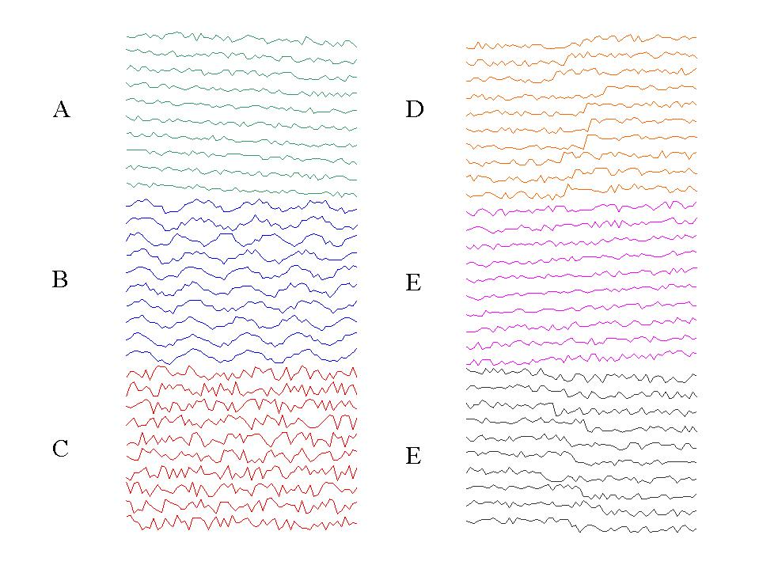

This data consists of synthetically generated control charts.
Dr Robert Alcock rob@skyblue.csd.auth.grDate Donated: June 8, 1999
This dataset contains 600 examples of control charts synthetically generated by the process in Alcock and Manolopoulos (1999). There are six different classes of control charts:
The following image shows ten examples from each class:
 (A) Downward Trend. (B) Cyclic. (C) Normal. (D) Upward Shift. (E) Upward Trend. (F) Downward Shift.1-100 Normal 101-200 Cyclic 201-300 Increasing trend 301-400 Decreasing trend 401-500 Upward shift 501-600 Downward shift
Alcock R.J. and Manolopoulos Y. Time-Series Similarity Queries Employing a Feature-Based Approach. 7th Hellenic Conference on Informatics. August 27-29. Ioannina,Greece 1999.
D.T. Pham and A.B. Chan "Control Chart Pattern Recognition using a New Type of Self Organizing Neural Network" Proc. Instn, Mech, Engrs. Vol 212, No 1, pp 115-127 1998.